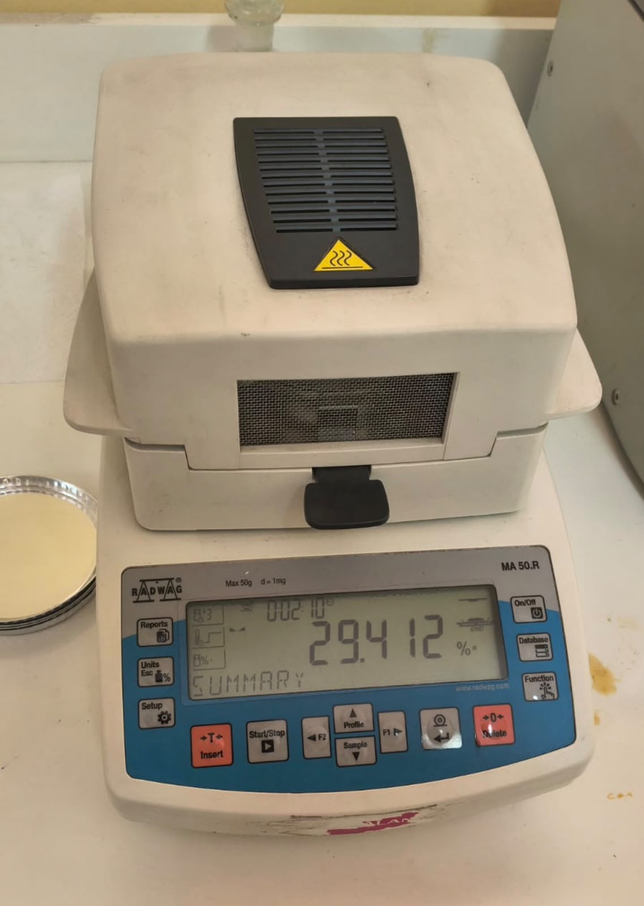

Objetivo
Determinar el porcentaje de humedad de una muestra de alimento mediante el método gravimétrico de secado en estufa, como parte del control de calidad del producto.
Fundamento
La muestra se somete a secado en estufa a 103–105 °C hasta alcanzar masa constante. La pérdida de masa corresponde al agua evaporada, lo que permite calcular el contenido de humedad. Este parámetro es clave en alimentos: influye en su conservación, estabilidad y calidad. En la práctica se utilizó además un analizador de humedad (termobalanza), que seca la muestra con radiación halógena y entrega directamente el porcentaje de humedad.
Materiales y equipos
- Balanza analítica
- Cápsula o placa de secado
- Estufa de secado (103–105 °C)
- Desecador con sílica gel
- Pinzas metálicas y EPP (delantal, guantes, lentes de seguridad)
Procedimiento
- Secar y tarar la cápsula; registrar su masa en balanza analítica.
- Pesar entre 2 y 5 g de muestra homogeneizada en la cápsula.
- Llevar a estufa a 103–105 °C durante 2 a 4 horas.
- Enfriar en desecador y pesar.
- Repetir secado y pesada hasta obtener masa constante.
- Registrar todos los datos para asegurar la trazabilidad del ensayo.
Cálculo
Resultados
| Muestra | Masa muestra (g) | Masa final (g) | % Humedad |
|---|---|---|---|
| Muestra 1 (ejemplo) | 3,000 | 2,700 | 10,0 % |
| Muestra 2 (ejemplo) | 3,050 | 2,752 | 9,8 % |
Evidencia fotográfica



Documento de apoyo: Contenidos — Análisis de humedad y cenizas (P.M.A.O.)
Conclusión
El contenido de humedad obtenido se encuentra dentro de los valores esperados para el tipo de muestra analizada, lo que da cuenta de un producto conforme en este parámetro de control de calidad.